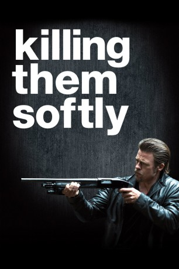
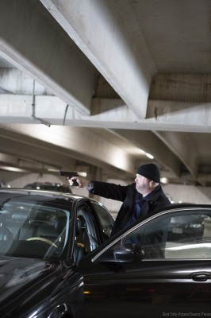

#4622 Killing Them Softly
 
 IMDB-Wertung: 6.2 / 10
IMDB-Wertung: 6.2 / 10  Tomatometer: 74
Tomatometer: 74  Metascore: 0
Metascore: 0 
Kleingstadtanove Frankie und sein Kumpel, der heroinabhängige Russell, sind pleite. Um schnell wieder an Geld zu kommen, sind sie für den heißen Tipp des Geschäftsmanns Johnny Amato dankbar: In New Orleans soll ein Pokerspiel in Mobsterkreisen stattfinden, bei dem besonders hohe Geldsummen zum Einsatz kommen. Das lassen sich Frankie und Russell nicht zweimal sagen und es gelingt ihnen tatsächlich, bei dem Raub den gesamten Preispool von 30.000 Dollar zu erbeuten. Eine Schmach, die Veranstalter und Mafioso Markie Trattman, nicht lange auf sich sitzen lassen kann: er engagiert den berüchtigten Auftragskiller Jackie Cogan und dessen New Yorker Kollegen Mickey. Frankie und Russell müssen sich warm anziehen, denn die beiden Auftragskiller haben ihre ganz eigenen Methoden, um die Täter ihrer "gerechten" Strafe zuzuführen.
Jahr: 2012
Dauer: 97 Minuten
FSK: 16
Land: USA Studio: Weinstein Company, TheTonspuren: DTS - ,
Untertitel: Deutsch,
Auflösung: 1080p (1920x804) Größe: 8386 MB
Genre: Krimi, Thriller
Regisseur: Andrew Dominik
Drehbuch: Ernest Haycox
Soundtrack:
Darsteller:
 Brad Pitt als Jackie
Brad Pitt als Jackie Scoot McNairy als Frankie
Scoot McNairy als Frankie Ben Mendelsohn als Russell
Ben Mendelsohn als Russell James Gandolfini als Mickey
James Gandolfini als Mickey Richard Jenkins als Driver
Richard Jenkins als Driver- Vincent Curatola als Johnny Amato
 Ray Liotta als Markie Trattman
Ray Liotta als Markie Trattman Trevor Long als Steve Caprio
Trevor Long als Steve Caprio Max Casella als Barry Caprio
Max Casella als Barry Caprio Sam Shepard als Dillon
Sam Shepard als Dillon-  Slaine als Kenny Gill
- Linara Washington als Hooker
- Ross Brodar als Poker Guy
- Wade Allen als Business Suit Agent
 Christopher Berry als Cab Driver Agent
Christopher Berry als Cab Driver Agent Mustafa Harris als Bartender #1
Mustafa Harris als Bartender #1- Dared Wright als Waiter
 John McConnell als Bartender #2
John McConnell als Bartender #2 Joe Chrest als Business Suit Agent
Joe Chrest als Business Suit Agent George W. Bush als Himself , archive footage, uncredited
George W. Bush als Himself , archive footage, uncredited- Julio Castillo als Miss Annie , uncredited
 Garret Dillahunt als Eddie Mattie , uncredited
Garret Dillahunt als Eddie Mattie , uncredited Oscar Gale als Sweet Melinda , uncredited
Oscar Gale als Sweet Melinda , uncredited- Wendy Clarice Jordan als Pink Pants , uncredited
 David Joseph Martinez als Pablo , uncredited
David Joseph Martinez als Pablo , uncredited- John McCain als Himself , archive footage, uncredited
 Barack Obama als Himself , archive footage, uncredited
Barack Obama als Himself , archive footage, uncredited- Henry Paulson als Himself , archive footage, uncredited
- Kenneth Brown Jr. als Security Force Agent
- Bryan Billingsley als Bar Patron #1
- Shannon Brewer als Bar Patron #2
- Roger Pfeiffer als Bar Patron #3
- Julia Adams als Maid , uncredited
- Rhonda Floyd Aguillard als Pedestrian , uncredited
- Edward J. Clare als Prison Doctor , uncredited
- Peter A. DeFazio als Himself , archive footage, uncredited
- Gregory Allen Gabroy als Reveler , uncredited
- Joshua Joseph Gillum als Murderer , uncredited
- Gene Kevin Hames Jr. als Poker Dealer #1 , uncredited
- Charles Hunt als Homeless Man , uncredited
- Kirk Jordan als DEA Agent , uncredited
- John C. Klein als Traveler , uncredited
- Shadoe Knight als Mafia Poker Player , uncredited
- Raymond Lapino als Elderly Poker Player , uncredited
- Cynthia LeBlanc als AMTRAK / Greyhound Bus patron , uncredited
- Elton LeBlanc als AMTRAK / Greyhound Bus patron , uncredited
- Adam Sibley als Naked Guy , uncredited
- Logan Douglas Smith als Bus Station Constrution Worker , uncredited
- Daniel Vincent als Evicted Husband , uncredited
- Glen Warner als Construction Worker , uncredited
Datei: X:\2012(G-M)\Killing Them Softly (2012, FSK16, 1920x804).mkv seit 24.10.2016
Festplatte: HD 2012(A-M)
 Es gibt insgesamt 112 Filme in der Gruppe '2012(G-M)'
Es gibt insgesamt 112 Filme in der Gruppe '2012(G-M)'